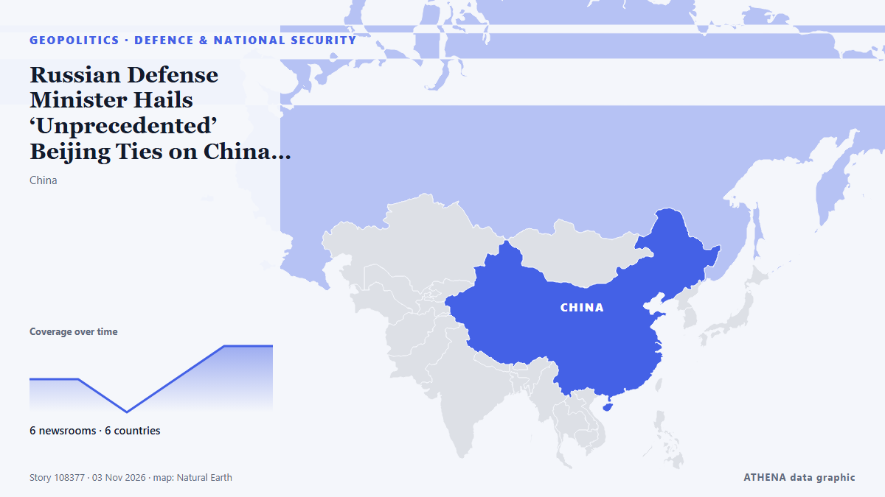

Оборона и нацбезопасность
СпонсорПри поддержке  Cybernetics and Artificial Intelligence Lab Welcome to the Cybernetics and Artificial Intelligence Laboratory, established at the Department of Business Administration of the National and Kapodistrian University of Athens. The lab is headed by Professor Dimitrios Thomakos. The lab aims to do research that can be published in top venues. Our research uses tools and methods of Artificial Intelligence, and lies in the following areas: - Forecasting - Decision making - Cyber security - Finance We are always looking forward to collaborating with exceptional students!
Cybernetics and Artificial Intelligence Lab Welcome to the Cybernetics and Artificial Intelligence Laboratory, established at the Department of Business Administration of the National and Kapodistrian University of Athens. The lab is headed by Professor Dimitrios Thomakos. The lab aims to do research that can be published in top venues. Our research uses tools and methods of Artificial Intelligence, and lies in the following areas: - Forecasting - Decision making - Cyber security - Finance We are always looking forward to collaborating with exceptional students!
| 22 окт. | 0 |
|---|---|
| 23 окт. | 0 |
| 24 окт. | 0 |
| 25 окт. | 0 |
| 26 окт. | 0 |
| 27 окт. | 1 |
| 28 окт. | 0 |
| 29 окт. | 1 |
| 30 окт. | 2 |
| 31 окт. | 3 |
| 1 нояб. | 4 |
| 2 нояб. | 6 |
| 3 нояб. | 7 |
| 4 нояб. | 0 |
Заголовки приводятся на английском языке, как они были опубликованы.

Russian Defense Minister Hails ‘Unprecedented’ Beijing Ties on China Visit
Russian Defense Minister said Moscow’s strategic partnership with Beijing had reached an “unprecedentedly high level” during talks in China. из Kyiv Post
Saudi defence minister and Hegseth discuss latest Houthi attacks
RIYADH: Saudi Defense Minister Prince Khalid bin Salman held separate phone calls with his Japanese counterpart, Shinjiro Koizumi, and Australian Deputy Prime Minister and Defense Minister Richard… из Arab News
Indian Navy Rescues 20 Crew Members From Hijacked Iranian Vessel off Somalia
Airborne commandos recapture fishing boat seized by pirates as attacks off the Somali coast rise to their highest level since 2013. из Kurdistan24 (English)
Tarar, Saudi envoy discuss introducing Pakistani dramas in Saudi Arabia
Minister for Information and Broadcasting Attaullah Tarar on Tuesday emphasised the need to enhance cooperation between Pakistan and Saudi Arabia in media, culture and people-to-people contacts. из Business Recorder
Hanwha Philly Shipyard secures first US Navy shipbuilding contract
Hanwha Defense USA has secured its first US Navy shipbuilding contract after being selected by TOTE Services to construct a Medium Landing Ship (LSM) at Hanwha Philly Shipyard. из Container News
Aselsan lands $1.1B air defense export deal with unnamed customer
Company secures contract to supply air defense systems to an unnamed international customer, expecting deal to boost revenue. из Anadolu Agency (English)
Naval Group hands over second Hellenic Navy FDI frigate
On October 30, in Lorient, Naval Group delivered the second FDI frigate for the Hellenic Navy (FDI HN), HSNearchos. из Naval Today
Japan defense chief Koizumi gets serious about AI after being impressed by US tech
Artificial intelligence (AI) has increasingly revealed its threatening side amid a series of cases in which the technology has been misused i. из Mainichi (English)
Defence min inks Rs 53,866cr deal with GRSE & GSL for 8 next-gen corvettes for Navy
The Indian Defence Ministry signed contracts with two shipyards for constructing eight next generation corvettes. из Times of India
Algeria launches new cleanup of former French nuclear test site
Defense Ministry accuses France of withholding records and maps of radioactive waste burial sites. из Anadolu Agency (English)
Missing woman’s brother recounts her fears as prosecution rests murder case against her husband
Defense attorneys for Naresh Bhatt will target testimony by forensic investigators. из Courthouse News
Defense Minister: Iran’s combat power to be boosted for unrestricted response anywhere
Tehran, IRNA - Defense Minister Mehrdad Akhlaghi has vowed to resolutely pursue strengthening smart combat readiness and to fulfill the Leader’s strategy of a swift, effective, and proportionate… из IRNA (English)
Baker Mayfield's Buccaneers repeat rare 1974 NFL feat in 16-0 win over Falcons
In an extraordinary display of teamwork, on November 1, the Tampa Bay Buccaneers triumphed over the Atlanta Falcons without needing any completed passes. из Times of India
Japan can build defense edge on AI, Palantir CEO says
Japan's Defense Ministry is soliciting research proposals from private companies as part of efforts to develop small rockets that can. из Mainichi (English)
South Korean Group Wins Its First US Navy Medium Landing Ship Contract After Buying A Philadelphia Shipyard In 2024
TOTE Services, LLC, a leading U.S. maritime services company specializing in vessel construction management and ship management announced its first shipyard selection for the Medium Landing Ship… из Marine Insight
Iran’s defense doctrine no longer bound by ‘geography of a threat’: Leader’s advisor
Tehran, IRNA - Mohammad Mokhber, senior advisor and aide to the Leader of the Islamic Revolution, said in a message that Iran’s defense doctrine is rapidly evolving and that the geography of a threat… из IRNA (English)
Dendias Sets 34-Month Timeline for Achilles Shield Air Defence
Nikos Dendias said the Achilles Shield air and anti-drone defence system will be fully operational within 34 months as deliveries arrive. из Greek City Times
Salesforce to buy Rune in its most significant national security deal
Salesforce has agreed to buy Rune Technologies. из The Next Web
Mohsen Rezaei: Saudi Fears Israel Will Target Türkiye
Iran’s security chief says Saudi Defense Minister Prince Khalid bin Salman told the Tehran meeting that Israel will go after Türkiye and then Saudi Arabia after Iran, a claim not yet confirmed by… из Kurdistan24 (English)